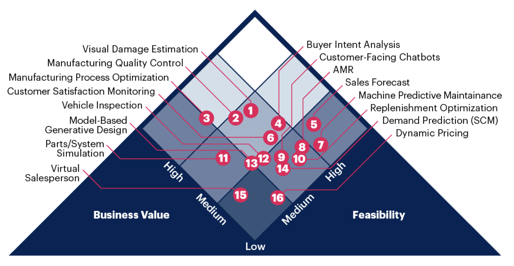
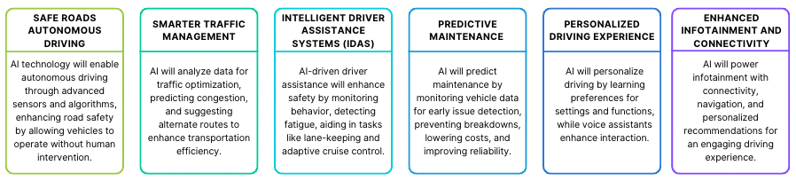

8 Automotive
For many, the idea of AI in the automotive industry conjures up images of autonomous or self-driving cars. These vehicles are certainly one of the more visible applications of the technology, but there is so much more behind the scenes — and under the proverbial hood. AI and automation has become essential in the design and production of automobiles, as well as the thousands of associated parts that go into every car. Automation and the use of smart robots has been crucial to the manufacturing process and AI is now being used across the whole value chain of mobility, from vehicle development to fleet servicing, enabling improvements in safety, cost, and quality.
AI in Automotive market size exceeded USD 6 billion in 2022 and is projected to expand at over 55% CAGR from 2023 to 2032. Some factors responsible for driving this rising adoption are: Growing customer awareness of the benefits of autonomous technology Governments are taking numerous measures to promote innovation in autonomous vehicle landscape ADAS (Advance Driver Assist System) an advanced car safety technology system level that falls under Level 2 technology, is becoming increasingly popular
8.1 Multiple Use-cases of AI
This infographic identifies 16 of the most prominent AI use cases that can improve operations from manufacturing to customer interactions in the automotive enterprise. Data and analytics leaders can use this as a starting point for further fine-tuning.

8.2 The Automotive Value Chain
Manufacturing: The manufacturing process starts with design and progresses through the supply chain, production, and post-production. Leveraging AI in the automotive industry enables the design of the vehicle as well as the equipment and robots used in the building of the autos. Examples include AI-powered wearable exoskeletons that designers can wear to help develop better safety and comfort in cars.
Transportation: Transportation benefits from the use of AI in the automobile industry by developing driver assist programs, autonomous driving, driver risk assessments, and driver monitoring, such as monitoring a driver’s eye to identify the danger of falling asleep at the wheel.
Service: AI can be used for predictive maintenance and notifications for things like engine and battery performance, as well as insurance programs that monitor driver behavior in calculating risks and costs.
8.3 Case study - Toyota’s AI-Enhanced Car Design Process!
Toyota’s innovative approach in the automotive sector involves leveraging AI to revolutionize the car design process. By integrating engineering parameters into early design sketches using generative AI, Toyota aims to expedite design cycles and minimize iterations. The collaboration between designers and AI ensures efficiency, as constraints can be set for specific requirements like drag reduction, thus enhancing the aerodynamics of electric vehicles. Toyota’s strategic utilization of AI underscores the harmonious partnership between technology and human creativity, ultimately aiming to amplify designers’ ideas and inspire faster innovation.
Key Takeaways:
Toyota’s integration of generative AI accelerates the automotive design process by embedding engineering parameters in early sketches.
The strategic use of AI-driven constraints, such as aerodynamics, showcases Toyota’s commitment to enhancing vehicle performance and efficiency.
Toyota’s approach emphasizes collaboration between AI and human designers, leading to a symbiotic relationship that expedites creative exploration.
This case underscores Toyota’s dedication to embracing technology as a catalyst for innovation, further solidifying the brand’s role as a pioneer in the automotive industry.
8.4 Future of Automotive Industry is fueled by AI
In conclusion, Artificial intelligence is transforming the automotive industry and promising a future of transportation that is safer, more efficient, and personalized. With advancements in autonomous driving, intelligent safety features, optimized traffic management, predictive maintenance, and personalized driving experiences, AI is revolutionizing the way we travel. As AI continues to evolve, we can look forward to a future where transportation is more accessible, reliable, and enjoyable for all. Embracing AI in the automotive sector will lead to safer roads, efficient travel, and enhanced overall driving experiences.
